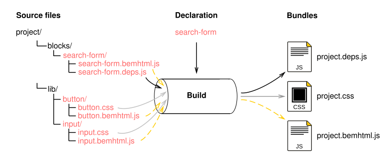

Technology for declaring dependencies
Introduction
In the BEM methodology, dependencies on other blocks, elements, modifiers, and technologies can be declared using deps.js files.
The basic principles of code organization and storage are applied to deps.js files:
Code is divided into separate parts. The logic of each block and its optional elements and modifiers is defined in separate files.
Files are grouped in directories –
deps.jsfiles for each component are stored according to the file system rules for BEM projects.
Dependencies are defined for all BEM entities that are distributed across the project's file system and aren't included in the declaration.
As an example, let's look at a search form that is created from the input block and the button block.
Example
The search-form block in the project's file structure:
search-form/ # Directory of the search-form block
search-form.bemhtml.js # Template of the search-form block
Template of search-form.bemhtml.js:
block('search-form')(
content()([{
block: 'input'
},{
block: 'button'
}])
);
To include styles and scripts from the input and button blocks, you will need to create the search-form.deps.js file.
The search-form block in the project's file structure after defining dependencies:
search-form/ # Directory of the search-form block
search-form.bemhtml.js # Template of the search-form block
search-form.deps.js # search-form.deps.js file
search-form.deps.js file:
({
shouldDeps: [
{ block: 'input' },
{ block: 'button' }
]
})
The build will include all the implementation technologies for the input and button blocks.

Notation
To abbreviate dependencies in comments, use the following notation:
/* b1 → b2 */— blockb1is dependent on blockb2(shouldDeps)/* b1 ⇒ b2 */— blockb1is dependent on blockb2(mustDeps)/* b1 → b1__e1 */— blockb1is dependent on its elementb1__e1/* b1 → b1_m1_v1 */— blockb1is dependent on its modifierb1_m1_v1/* b1 → b1__e1_m1_v1 */— blockb1is dependent on the modifier of its elementb1__e1_m1_v1/* b1.js → b2.bemhtml */— blockb1in the JavaScript implementation is dependent on blockb2in BEMHTML implementation.
DEPS syntax
A DEPS entity is an entity that defines a dependency between BEM entities.
There are several ways to represent a DEPS entity in the .deps.js file:
({
/* DEPS entity */
})
The full notation of a DEPS entity looks like this:
/* DEPS entity */
({
block: 'block-name',
elem: 'elem-name',
mod: 'modName',
val: 'modValue',
tech: 'techName',
shouldDeps: [ /* BEM entity */ ],
mustDeps: [ /* BEM entity */ ],
noDeps: [ /* BEM entity */ ]
})
Note All fields are optional.
The fields in a DEPS entity can be divided into the following groups:
Defining the BEM entity:
block(string) — Block name.elem(string) — Element name.mod(string) — Modifier name.val(string) — Modifier value.
Defining the implementation of the BEM entity:
tech(string) — The technology to collect dependencies for.
Defining the dependency:
shouldDeps(array/object) — Defines dependencies that can be included in any order.mustDeps(array/object) — Defines dependencies that must be included in the build result before the code of the BEM entity where these dependencies are declared.noDeps(array/object) — Cancels existing dependencies declared on other redefinition levels (for example,i-bem__dom_init_auto).
Fields that define the BEM entity
The fields specify which BEM entity needs the dependencies included. They can be restored from the context by the file name. So the following statements for the file b1__e1_m1_v1.deps.js are equivalent:
/* b1__e1_m1_v1 → b2 */
({
block: 'b1',
elem: 'e1',
mod: 'm1',
val: 'v1',
shouldDeps: { block: 'b2' }
})
/* b1__e1_m1_v1 → b2 */
({
shouldDeps: { block: 'b2' }
})
Field that defines the implementation technology for the BEM entity
It specifies which implementation technology to include the dependency for. If the tech field or its value is omitted, the dependency is considered general and applies to all technologies.
Including dependencies for a technology is used, for example, to create a client JavaScript bundle that only has templates for the blocks that will be used in the browser. In this case, part of the templating happens on the server side, so some of the templates are never used in the client.
Example
search-form.deps.js file:
/* search-form → button.bemhtml; search-form → input.bemhtml */
({
shouldDeps: [
{ block: 'button', tech: 'bemhtml' },
{ block: 'input', tech: 'bemhtml' }
]
})
Only the specified implementation technology will be included in the build.

Fields that define the dependency
The mustDeps and shouldDeps fields define dependencies, and the noDeps field cancels existing dependencies that are declared on other redefinition levels.
Comparing shouldDeps and mustDeps
Sometimes you need to change the block implementation by changing the block on another redefinition level. In this case, the original implementation of the block must be added to the build before the code with additional rules.
The mustDeps field specifies dependencies that are added to the build results before the code of the BEM entity where these dependencies are declared. If dependencies are defined using shouldDeps, they can be added in any order.
More information about the DEPS syntax.
Examples
Including a block
b1 → b2 — block b1 is dependent on block b2
b1.deps.js file:
/* b1 → b2 */
({
shouldDeps: [
{ block: 'b2' }
]
})
Including an element
b1 → b1__e1 — block b1 is dependent on its element b1__e1
b1.deps.js file:
/* b1 → b1__e1 */
({
shouldDeps: [
{ block: 'b1', elem: 'e1' }
]
})
Note The
elemfield only adds the element, not the block itself.
Including a modifier
Key-value modifier
b1 → b1_m1_v1 — block b1 is dependent on its key-value modifier b1_m1_v1
b1.deps.js file:
/* b1 → b1_m1_v1 */
({
shouldDeps: [
{ block: 'b1', mod: 'm1', val: 'v1' }
]
})
Boolean modifier
b1 → b1_m1 — block b1 is dependent on its boolean modifier b1_m1
b1.deps.js file:
/* b1 → b1_m1 */
({
shouldDeps: [
{ block: 'b1', mod: 'm1' }
]
})
OR
b1.deps.js file:
/* b1 → b1_m1 */
({
shouldDeps: [
{ block: 'b1', mod: 'm1', val: true }
]
})
Including dependencies for technologies
b1.js → b2.bemhtml — block b1 in the JavaScript implementation is dependent on block b2 in the BEMHTML implementation
b1.deps.js file:
/* b1.js → b2.bemhtml */
({
tech: 'js',
shouldDeps: [
{ block: 'b2', tech: 'bemhtml' }
]
})